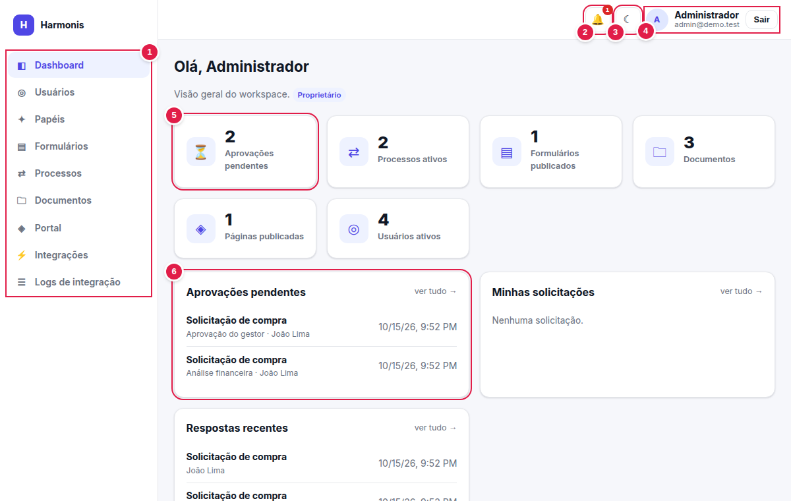

Manual do Harmonis
Guia completo, ilustrado, de como usar a plataforma: cada tela, cada campo e cada fluxo — do primeiro acesso à integração com outros sistemas.

O que é o Harmonis
O Harmonis é uma plataforma de processos e conteúdo corporativo. Com ele sua empresa:
- cria formulários sob medida (com validações, campos condicionais e anexos) e coleta respostas;
- define fluxos de aprovação (etapas, aprovadores por papel ou pessoa, decisões condicionais);
- acompanha cada solicitação em uma linha do tempo, com notificações para quem precisa agir;
- guarda documentos com versões e metadados, e publica comunicados em um portal;
- envia os dados a outros sistemas (ERP, CRM, automações) por webhooks, com registro de cada envio;
- controla tudo por papéis e permissões, cada empresa isolada em seu próprio ambiente.
Por onde começar
Escolha a trilha que combina com o que você faz no dia a dia:
✎Preciso fazer uma solicitaçãoPreencher formulários, anexar arquivos e acompanhar o andamento.
✔Preciso aprovar solicitaçõesCaixa de aprovações, decisão, comentário e campos sob sua responsabilidade.
▤Crio formulários e fluxosConstrutor, tipos de campo, validações, fluxo e integrações por evento.
◎Administro o workspaceUsuários, papéis, permissões e a matriz completa de acesso.
⚡Integro com outros sistemasWebhooks, tipos de autenticação, payload, assinatura e logs.
⚙Sou de TI / implantaçãoRequisitos, configuração, banco por empresa e segurança.
Primeira vez aqui?
Leia Visão geral e conceitos (10 minutos) e depois Primeiros passos. Eles dão o vocabulário usado em todo o resto.
Mapa do manual
| Capítulo | O que você encontra |
|---|---|
| 1. Visão geral | Módulos, conceitos, ciclo de vida de uma solicitação, perfis de uso. |
| 2. Primeiros passos | Login, anatomia da tela, notificações, tema escuro e uso no celular. |
| 3. Usuários e papéis | Cadastro de pessoas, papéis de sistema e personalizados, permissões. |
| 4. Construtor de formulários | Todos os tipos de campo e cada propriedade, validações, condições, anexos, “Preenchido por”. |
| 5. Preenchimento e respostas | Como o solicitante preenche, mensagens de erro, tabela de respostas e exportação CSV. |
| 6. Fluxo de aprovação | Etapas, aprovadores, modos, condições, decisões (gateways) e integrações por evento. |
| 7. Processos | Caixa de aprovações, decisão, linha do tempo, status e notificações. |
| 8. Documentos | Pastas, upload, versões, metadados e busca. |
| 9. Portal | Páginas em Markdown, rascunho e publicação. |
| 10. Integrações | Cadastro de webhooks, autenticação, cabeçalhos, assinatura, teste e vínculo ao fluxo. |
| 11. Logs de integração | Acompanhamento, filtros, detalhes e reenvio. |
| 12. Matriz de permissões | Quem pode o quê, tela a tela. |
| 13. Glossário | Termos usados no sistema. |
| 14. Dúvidas e problemas | Respostas rápidas e soluções para mensagens comuns. |
| 15. Implantação | Resumo técnico para quem instala e mantém o sistema. |
Como usar este manual
- Busca: use a caixa no topo (ou tecle /) para encontrar qualquer termo.
- Navegação: o menu à esquerda lista os capítulos; o índice à direita mostra as seções da página atual.
- Imagens numeradas: os círculos vermelhos nas telas correspondem aos itens numerados logo abaixo da imagem.
- Avisos: caixas coloridas destacam notas, dicas, atenções e cuidados.
- Permissões: termos como
forms.updateindicam a permissão necessária para uma ação; se um botão não aparece para você, provavelmente falta essa permissão (veja a matriz). - Dados de exemplo: as telas foram capturadas em uma empresa fictícia de demonstração com um formulário de Solicitação de compra, usado como exemplo condutor em todo o manual.
Impressão
As páginas têm estilo próprio para impressão/PDF (menu e navegação ocultos). Use Ctrl+P em cada capítulo.